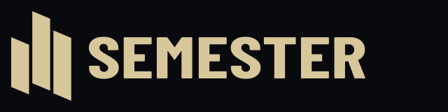
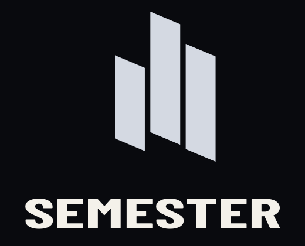

Horizontal · default
logo-horizontal.svgHorizontal · reversed on Ink
logo-horizontal-reversed.svg
Brass · ceremonial only
logo-brass.svgStacked · square spaces
logo-stacked.svg
Stacked · reversed
logo-stacked-reversed.svgOn Semester blue · use mono white
logo-mono-white.svg